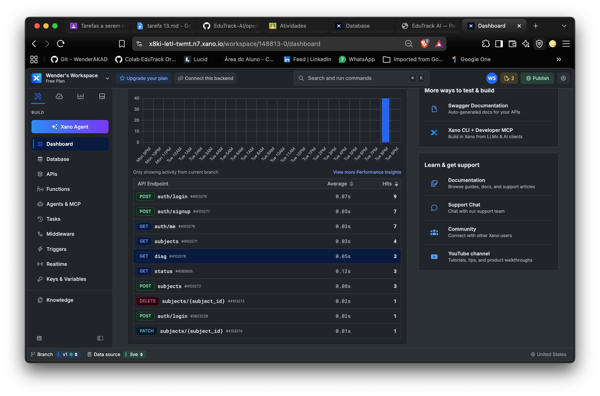
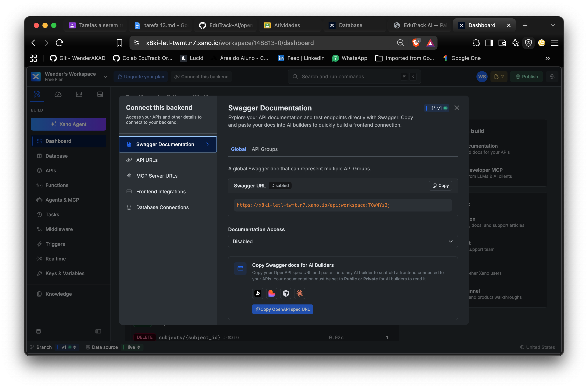

Aluno: Wender Araújo Santos | Disciplina: Innovation Lab: Desenvolvimento Avançado No/Low Code | Turma: 2º Semestre
Criar endpoints CRUD para a tabela subjects, com autenticação JWT e filtro por usuário.
| Método | Rota | Autenticação | Descrição |
|---|---|---|---|
| GET | /subjects | Bearer Token | Lista disciplinas do usuário autenticado |
| POST | /subjects | Bearer Token | Cria disciplina vinculada ao user_id do token |
| PATCH | /subjects/{subject_id} | Bearer Token | Atualiza disciplina do próprio usuário |
| DELETE | /subjects/{subject_id} | Bearer Token | Remove disciplina do próprio usuário |
Grupo: Autenticacao EduTrackIA Est | Base URL: https://x8ki-letl-twmt.n7.xano.io/api:JBdUmIAC | Swagger: Ativado

